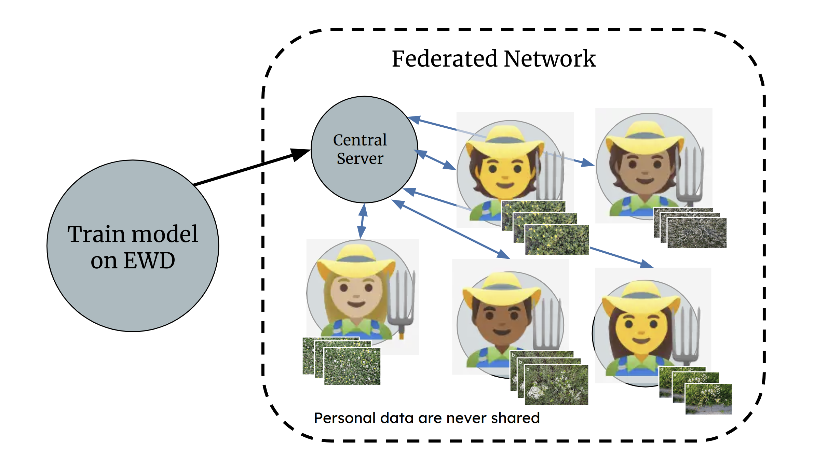
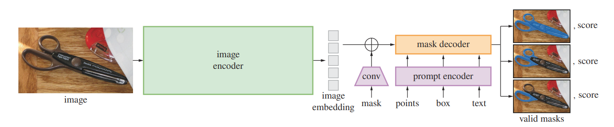
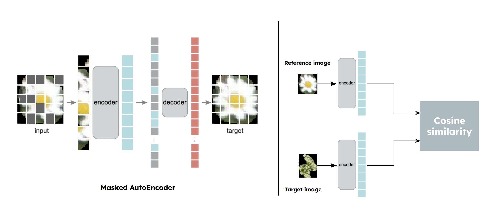
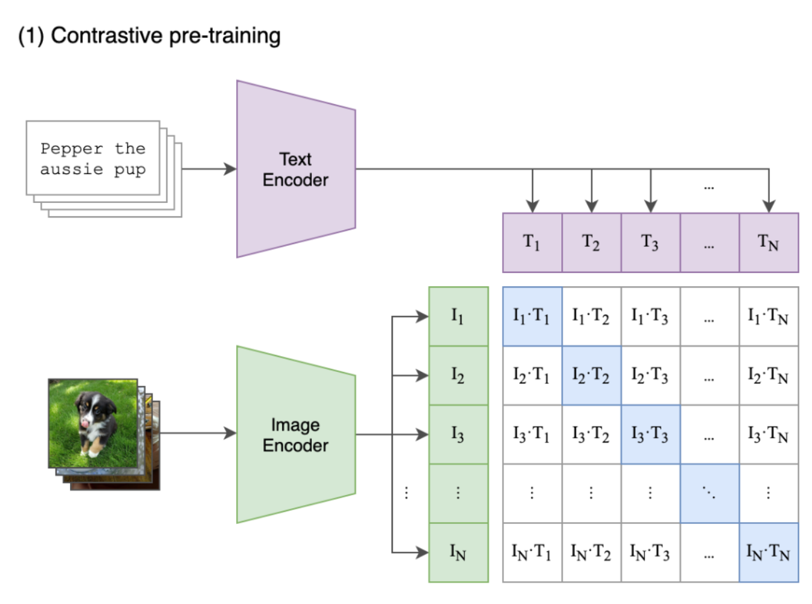
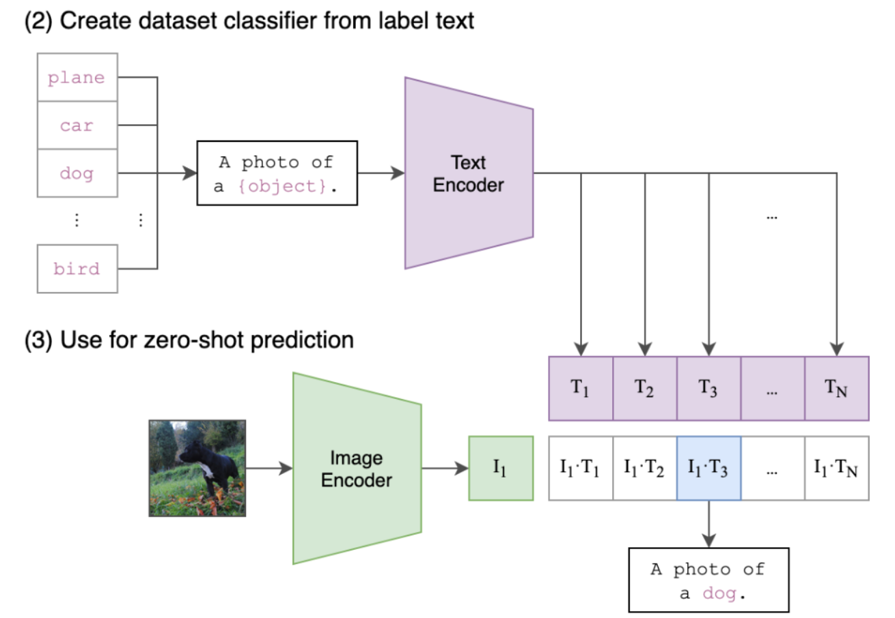
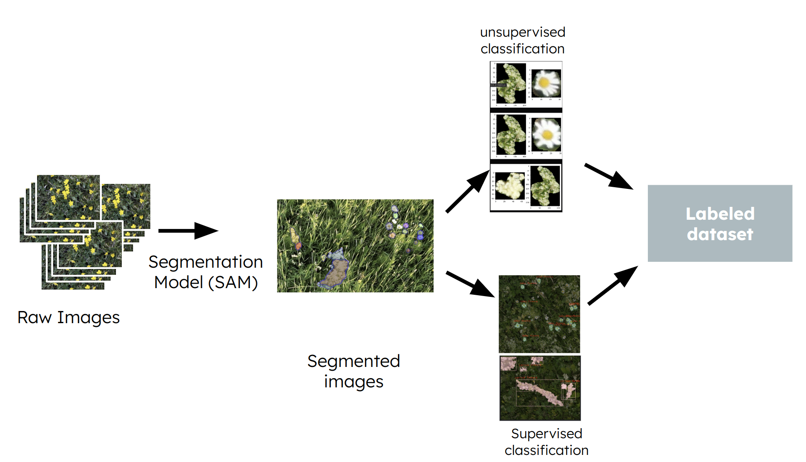
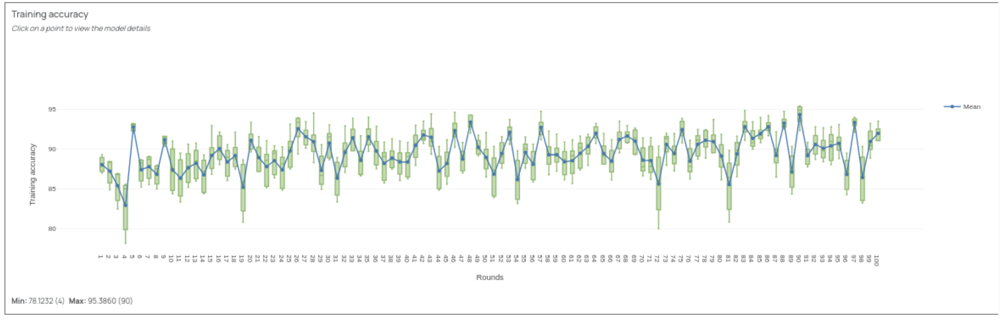
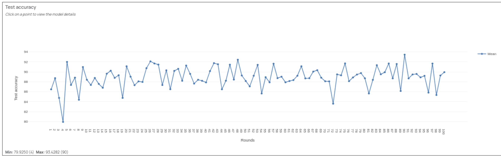
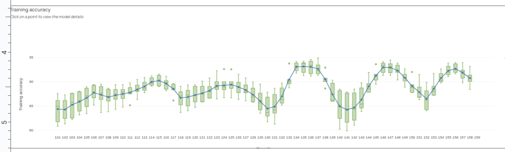
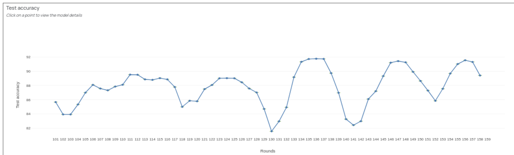

PlantMap
Federated learning for segmentation, detection, and classification of weed species in aerial images taken from farm fields
Github Repo
https://github.com/sarakarimi/PlantMap/blob/main/README.md
Setup Environment
conda create --prefix <path to new conda env> python=3.12
conda activate <path or name>
conda install -c conda-forge huggingface_hub
cd /tmp # or any empty directory
git clone https://github.com/facebookresearch/sam2.git
cd sam2
pip install torch torchvision numpy
pip install -e .
pip install -e ".[notebooks]"
pip install scipy
Setup the finetune environment using FEDn
To get familiar with it, we were using uv rather than more common virtual environments like conda.
Install it using curl -LsSf https://astral.sh/uv/install.sh | sh (on Linux and macOS).
No additional steps are needed to prepare the environment there.
In hindsight, we should set up the entire repository using uv.
Project Structure
├── assests
├── fedn_supervised
│ └── client
│ └── config
├── finetune_mae
│ └── src
│ ├── data
│ ├── models
│ └── utils
├── pretrain_clip
│ └── config
│ ├── model
│ └── training
├── sam_clip # Code for automatic annotation and labeling of raw images using SAM+CLIP
│ ├── config # Model hyperparameters & configs
│ ├── data # Prompt tokens
│ │ └── resources
│ ├── models # SAM and clip model integratetion
│ │ ├── clip
│ │ ├── detector
│ │ └── sam
│ ├── pretrained # Pre-trained models' checkpoints
│ │ ├── clip
│ │ └── sam
│ └── utils
└── unsupervised_classification
Create Masks
We experienced with that during the early project stage.
# Place all images in data/Hyperlapse
mkdir masks
mkdir test_results
python scripts/huggingface_sam_test.py
Create Flower Dataset for Unsupervised Classification
mkdir masks
conda activate <path or name>
python unsupervised_classification/create_all_flowers.py
Similarity Matching
Due to laziness, the current code does only compare all flowers of a single picture.
# Run the "Create Flower Dataset for Unsupervised Classification" step
mkdir similarities
conda activate <path or name>
python unsupervised_classification/feature_matching.py
Running fine-tuning locally with different CLIP configs
First enter the pretrain_clip directory and ensure that you have uv installed. NOTE: This is only confirmed to work on a Linux machine (with or without GPU). MacOS is not supported and Windows is untested.
All the configurations for the model are contained within the config directory, both for pre-training on EWD and fine-tuning on the main dataset. There is a base configuration, with specific presets for the training and model parameters. In order to run the fine-tuning with the default parameters (base CLIP model with parameters from Ray Tune and using the PlantMap dataset), simply run:
uv run finetune_model.py
If you wish to run the model with the CLIP model set to the pre-trained classification model, then run:
uv run finetune_model.py model=classifier training=classifier
If you wish to do the same for the contrastive pre-trained model, then run:
uv run finetune_model.py model=contrastive training=contrastive
Add pretraining_ to the start of both config names if you want to run pre-training on EWD instead of fine-tuning. If you wish to change a specific parameter (for example the number of epochs to train for, the value of dropout, or the batch size) then you can run:
uv run finetune_model.py training.epochs=10 training.batch_size=128 model.dropout=0.2
This works the same whether you use the base CLIP model, or load in one of the other four models.
Project members:
Derya Akbaba - Linkoping University
Sofia Andersson - Lund University
Sara karimi - KTH Royal Institute of Technology
Markus Fritzsche - Linkoping University
Xavante Erickson - Lund University and Ericsson
Introduction
Understanding and managing the biodiversity of farming fields is crucial for sustainable agriculture and efficient resource utilization. Having accurate information about the composition of wildflowers play an important role in managing the biodiversity achieving more sustainable and efficient farming practices. But given that wildflowers are small, sparsely scattered in large areas, and have short blooming cycles, tracking the composition using traditional methods are challenging.
This project aims to create a "plant map" of farm fields by identifying specific plant species at various coordinates, provided using aerial imaging captured by drones. The resulting map will provide critical insights into plant distribution, enabling farmers to optimize pesticide application and tailor soil mineral combinations for enhanced crop growth. Furthermore, the timing of cattle grazing in spring, when critical flora has flowered, significantly impacts both cattle well-being and environmental balance. So efficiently identify key flora across vast grazing areas and providing real-time statistics to farmers can further reduce the costs and optimizes the release of cattle for grazing which further contribute to efficient farming. To help this effort, we use machine learning approaches leveraging state-of-the-art computer vision techniques and pre-trained vision models and fine-tune them on datasets collected from farms. To allow farmers' data privacy we employ a federated learning approach where each farmer can have local trainings without the need to share data globally. We build on prior work by Schouten et al. [1] who contribute an expert-annotated dataset of wildflower images from the Netherlands. We hope can be small contribution towards smarter and more sustainable farming.
Scalable solution
The main scalable solution in this project is built upon a federated learning architecture, enabling efficient training across distributed datasets while preserving data privacy. To support this approach, we leverage the FedN tool, a framework designed for federated learning applications. Below, we provide a brief introduction to federated learning and the FedN tool. The actual fine-tuning model is also built upon the PyTorch Lightning infrastructure, which allows for the possibility of distributed learning, as well as scalability, without altering the model architecture.
Federated Learning and FedN
Federated learning (FL) is a decentralized approach to machine learning that allows multiple parties to collaboratively train a shared model without sharing their raw data. This technique is particularly valuable in scenarios where data privacy, security, or locality is critical, such as healthcare, finance, and agriculture.
How Federated Learning Works
- Local Training: Each participating client (e.g., farmers, edge devices) trains a local model using its private data. This training process occurs independently and securely on each client’s device.
- Model Updates: Once training is complete, each client sends only the model updates (e.g., weights, gradients) to a central server. Importantly, raw data remains on the client’s device, ensuring privacy.
- Global Aggregation: The central server aggregates the updates from all participating clients to create a global model. This global model is then shared back with the clients for the next round of training.
- Iterative Process: Steps 1–3 are repeated for several rounds until the global model converges to a satisfactory performance level.
Federated learning comes with advantages such as (i) privacy: as sensitive data never leaves the client’s device, reducing the risk of data breaches, (ii) scalability: as it can scale to millions of devices or participants, enabling collaborative training on massive datasets, and (iii) personalization: as clients can fine-tune the global model locally to adapt it to their specific data distribution.
Aggregation Methods in Federated Learning
A critical aspect of FL is the aggregation of model updates to ensure the global model improves with each round. Common aggregation methods include:
- Federated Averaging (FedAvg): A simple yet effective method introduced by Sun et al. [2], where the global model is updated by averaging the weights or gradients received from clients, weighted by the size of each client's dataset.
- Gradient Aggregation: In scenarios where gradients are shared, these can be aggregated directly to update the global model.
- Adaptive Aggregation: Advanced methods that account for heterogeneity in client data, ensuring that clients with diverse data distributions contribute effectively to the global model.
FedN for Federated Weed Detection
In this project, we leverage FedN, a robust federated learning framework designed for scalable and efficient model training. Using FedN, we aggregate locally trained models from farmers to create a unified global model for weed detection and classification. Each farmer's model is trained on their specific annotated data (e.g., clovers or chamomiles), and the aggregated model benefits from the diverse local datasets while respecting data privacy. This approach allows us to build a high-performing foundation model for farm weed detection without compromising individual data security.

Machine Learning Methods
Since the solution entails performing image segmentation and object detection/classification tasks on images, the following sections detail the machine learning approaches employed for each specific task.
Segmentation of images
Given a collection of raw images, the first step is to perform segmentation to identify and extract potentially interesting regions that contain objects within the images. To achieve this, we have explored two distinct approaches: one supervised and the other unsupervised, which we detail further below.
-
Unsupervised Segmentation : Segments images into meaningful regions using semantic and instance mask generation with no labeled data required for further training or fine-tuning of the model (like U2Seg (Unsupervised Universal Image Segmentation)).
-
Supervised Segmentation : Uses the Segment Anything Model (SAM) for the segmentation task. Training or fine-tuning of the SAM model requires labeled data
Supervised Segmentation
The Segment Anything Model (SAM) [3] is a foundation model for image segmentation, designed to handle a wide variety of segmentation tasks without the need for task-specific fine-tuning. At its core, SAM uses a vision transformer (ViT) backbone to extract rich, hierarchical features from an image. These features are then processed by a prompt encoder that allows users to provide inputs in the form of points, bounding boxes, or free-form text, specifying the region of interest to segment. SAM combines these prompts with the image features to predict masks through a lightweight mask decoder.

Classification of objects in the images
With the segmentations in place, we explore two approaches for the classification task:
-
Unsupervised Classification : This method relies on template matching to group segments of the original image that match with a given example without requiring labeled data.
-
Supervised Classification : This approach utilizes the pre-trained CLIP (Contrastive Language–Image Pretraining) model, leveraging its powerful multi-modal capabilities to classify segments based on learned visual and the provided textual prompts.
(Semi-/Un-)supervised Classification
We use SAM in order to get flower images without background as this is usually pretty accurate using a pretrained SAM2 model. For every possible wildflower, we select one candidate as reference image. We finetune a masked-autoencoder, discard the decoder and use the encoder part of the model to retrieve image features.
To train the model, we chose to compare two different approaches, BYOL [5] and SimCLR [6], both methods for learning visual representations. An encoder model maps each image into a vector. By normalizing the vector (unit vector) and comparing them using cosine-similarity, we get a probability of both images belonging to the same class or not.
Challenges
- The number of distinct flower classes is comparably low compared to the number of overall images
- Just by looking on the raw data, it is clear that the dataset is not evenly distributed (class imbalance)
- Many flowers of different classes look similar, e.g., all flowers with white blossoms.
- SAM is not perfect, i.e., it predicts false positives
(Semi-/Un-)supervised Classification
We use SAM in order to get flower images without background as this is usually pretty accurate using a pretrained SAM2 model.
For every possible wildflower, we select one candidate as reference image. We finetune a masked-autoencoder, discard the decoder and use the encoder part of the model to retrieve image features.
To train the model, we chose to compare two different approaches, BYOL and SimCLR, both methods for learning visual representations. An encoder model maps each image into a vector. By normalizing the vector (unit vector) and comparing them using cosine-similarity, we get a probability of both images belonging to the same class or not.

Challenges
- The number of distinct flower classes is comparably low compared to the number of overall images
- Just by looking on the raw data, it is clear that the dataset is not evenly distributed, i.e., unbalanced.
- Many flowers of different classes look similar, e.g., all flowers with white blossoms.
- SAM is not perfect, i.e., it predicts false positives and
Supervised Classification
CLIP (Contrastive Language–Image Pretraining) [4] is a multimodal model developed by OpenAI that learns to associate images and text through a contrastive learning framework. It uses two separate neural networks one for images (a vision transformer or CNN) and one for text (transformer-based language model). These networks encode images and text into a shared embedding space. During training, CLIP is presented with image-text pairs and learns to align their embeddings, so that the embedding of an image is close to its corresponding text description and far from unrelated ones. This enables CLIP to perform zero-shot tasks: it can recognize and classify images based on textual descriptions without requiring fine-tuning on specific datasets.
 
Pre-training
Using the Eindhoven Wildflower Dataset (EDW) to fine-tune the CLIP model on a variety of flowers, the theory is that this might improve performance on the target dataset, as the CLIP model would have seen many more images of flowers than those available in the dataset. Even if the labels do not overlap fully, they should in theory be close enough in embedding space to hopefully provide the model with a better starting point. The models were trained in two ways:
- Cross-categorical entropy. The CLIP model parameters were trained along with a classifier head for the EWD.
- Supervised Contrastive Loss. This is the method that the CLIP model was originally trained with. Images and labels for the EWD were fed into the model and the contrastive loss was then used to update the CLIP weights.
The best hyperparameters for each of the models were found using Optuna Search with Ray Tune. This search explored batch size, learning rate, and optimizers. The optimizers were AdaDelta, AdamW, and Stochastic Gradient Descent (SGD) with Nesterov momentum. All setups utilized a learning rate scheduler, with SGD using a cosine annealing scheduler with warm restarts [7] and the others lowering learning rate by a factor of 10 after 10 epochs of stagnation.
After this first step, the best model for each type of training was found, and their weights uploaded to HuggingFace. These were then used as a starting point to see how the model performed on the true dataset and whether the pre-training helped, or if the base CLIP model has the same performance. For this part of the project, the CLIP model weights were frozen and the classification head was the only part of the model being trained. The classification head had Kaiming-initialized weights and bias set to zero to start off with, which was particularly important for the model trained with CCE, as the original training head does not have the same amount of classes as the current head. For this case, the entire classification head was re-initialized, with the hope that most of the learning had been done by the CLIP model. The results of this training can be seen in the table further down.
Datasets
Since we started with an unannotated dataset of raw images, it was necessary to first annotate and label the dataset to generate training data required for training an image object detection and classification model. To achieve this, we used the pre-trained SAM+CLIP approach described in the Method section. Specifically, the raw images were fed into the SAM model, which performed segmentation to identify distinct regions in the images. These segmented regions were then passed to the CLIP model for classification. The CLIP model was provided with a list of textual prompts representing the labels of existing weed species, enabling it to classify each segment according to the specified labels. The resulting labeled dataset has over 2000 samples with labels for four weed species Daisy, Yarrow, Dandelion, and Red clover. The dataset is published in the HuggingFace dataset repository PlantMap.

As detailed in the Pre-training section, to develop a base model better suited for detection and classification on the above-mentioned dataset, we pre-trained our model on a similar dataset, the EWD dataset. This dataset contains 2,002 high-resolution annotated images of wildflowers, providing a robust starting point for training.
Experiments & Results
Results of single machine training
| Max accuracy | Model | Optimizer | Learning rate | Batch size | Dropout | First epoch acc |
|---|---|---|---|---|---|---|
| 89.3232 | Categorical | SGD | 0.02 | 32 | 0 | 88.44 |
| 91.411 | Base CLIP | SGD | 0.02 | 32 | 0 | 87.68 |
| 90.2979 | Categorical | SGD | 0.001 | 32 | 0 | 85.32 |
| 85.4972 | Base CLIP | SGD | 0.001 | 32 | 0 | 66.51 |
| 86.5553 | Contrast | AdaDelta | 0.04 | 32 | 0.2 | 72.17 |
| 86.77 | Contrast | AdaDelta | 0.04 | 32 | 0 | 72.88 |
| 88.67 | Contrast | AdaDelta | 0.4 | 32 | 0 | 86.78 |
| 90.48 | Contrast | AdaDelta | 4.5 | 32 | 0 | 85.61 |
| 89.76 | Contrast | AdamW | 0.008 | 32 | 0.1 | 87.04 |
| 88.61 | Contrast | AdamW | 0.01 | 32 | 0 | 85.55 |
These are the results of the fine-tuning on a single machine for a variety of hyperparameters. Originally, only the top two sets of parameters per model were going to be investigated (as found by Ray Tune), but there was evidence of overfitting for the contrastive model, which led to further investigation into both learning rates and dropout rates. Both max accuracy and the first epoch accuracy were calculated, as some models took a very long time to reach their max accuracy, and federated learning may prefer models that learn more quickly.
Results of federated learning
   
Conclusions
Segmentation
- The SAM model is good base model to use for segmentation but it needs a lot of hyperparameter tuning to adapt to unseen datasets
Pre-training on EWD
- Appears to increase accuracy compared to base CLIP model
- Overall better first epoch accuracy
- Particularly relevant at lower learning rates
- Higher learning rates show barely any learning
Federated learning
- Federated learning improves performance while maninting data privacy
- FedN needs more documentations, more robust operations, better server looks and better fault tolerance!
Future Work
Dataset, Segmentation, & Annotation
- Quality of images made it hard to detect small flower species (only daisy and yarrow was used)
- Better dataset annotation using pre-trained models to cover more species
- Use of segmentation models with editing capabilities to build a better dataset
- Exploration of unsupervised segmentation methods like U2seg
‘Real world’ application
- Continual learning and human feedback
- Including, exploring different types of federated aggregation
- GUI to support farmers with varying technical skills
- Test whether model can be app-ified
Individual Contributions
Sara Karimi: Worked on dataset creation (uploaded to HuggingFace) including segmentation and labeling of the flower species in images using a combined SAM+CLIP approach. Conducted an early evaluation of LabelStudio with an integrated SAM model but opted against it to ensure more robust and direct access to SAM functionalities.
Sofia Andersson: Pre-trained the CLIP models on the EWD using both a contrastive and classification approach. Wrote the fine-tuning script for the models using PyTorch Lightning with a flexible Hydra config to be able to run many different variations of the models. Optimized hyperparameters for all pre-trained and fine-tuned models using Optuna Search with Ray Tune. Ran the one-machine fine-tuning tests using the base CLIP model and the pre-trained CLIP models.
Markus Fritzsche: Observing how methods like SimCLR, MoCo, and BYOL can be used to fine-tune pre-trained vision transformer encoders to retrieve class dependent image features with a high cosine similarity score if two images belong to the same flower class and a low score otherwise. In addition, taking Sofia's work as a base to make it FEDn compatible, including distributing the dataset among all clients.
Xavante Erickson: Prepared and converted EWD to huggingface compatible format for Sofia Andersson's and Markus Fritzsche's work on fine-tuning. Explored unsupervised learning for panoptic segmentation using the PlantMap dataset. Assisted with FEDn development.
Derya Akbaba: Created initial dataset (uploaded to HuggingFace) including raw images used later by Sara. Created initial Docker file. Applied for and set up Berzelius project. Designed and created the project presentation.
References
[1] Schouten, Gerard, Bas SHT Michielsen, and Barbara Gravendeel. "Data-centric AI approach for automated wildflower monitoring." Plos one 19.9 (2024): e0302958.
[2] Sun, Tao, Dongsheng Li, and Bao Wang. "Decentralized federated averaging." IEEE Transactions on Pattern Analysis and Machine Intelligence 45.4 (2022): 4289-4301.
[3] Kirillov, Alexander, et al. "Segment anything." Proceedings of the IEEE/CVF International Conference on Computer Vision. 2023.
[4] Bianchi, Federico, et al. "Contrastive language-image pre-training for the italian language." arXiv preprint arXiv:2108.08688 (2021).
[5] Grill, Jean-Bastien, et al. "Bootstrap your own latent-a new approach to self-supervised learning." Advances in neural information processing systems 33 (2020): 21271-21284.
[6] Chen, Ting, et al. "A simple framework for contrastive learning of visual representations." International conference on machine learning. PMLR, 2020.
[7] Loshchilov, I. & Hutter, F. "SGDR: Stochastic Gradient Descent with Warm Restarts." arXiv preprint arXiv.1608.03983 (2017).